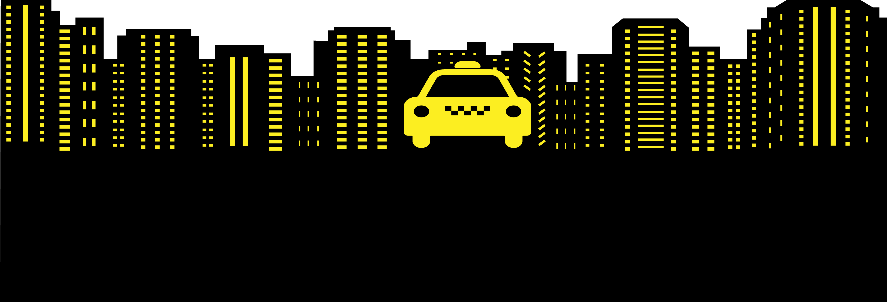
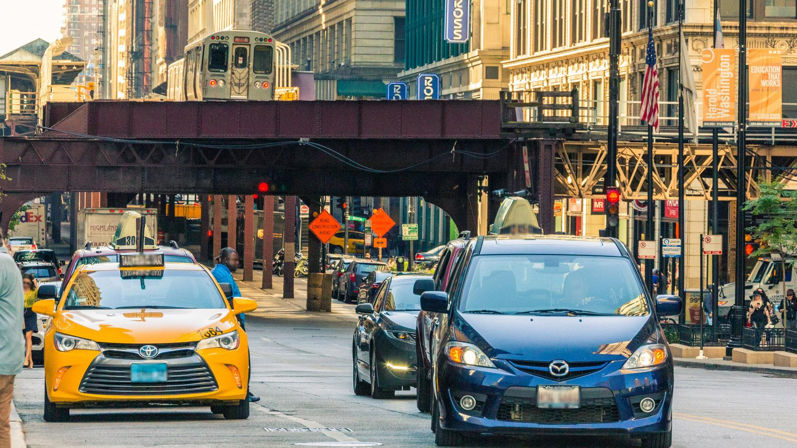

Mobility on Demand Systems: Data-Driven Analysis, Simulation, Visualization
ARCH 6306/6050, DSBA 6010, ITIS 8010/6010: Wednesdays 6pm-8:30pm, Taught Online
Team: Davis Millarrd, Connor Burdick, Aaron Perrill, Mohammad Fasahat
Dr. Dimitris Papanikolaou | dpapanik@uncc.edu | Urban Synergetics Lab | https://urbansynergeticslab.net
Full Streets, Empty Seats

Introduction: Empty Taxi Trips
Chicago, Illinois is the third largest city in America, boasting a resident population totaling nearly three million people spread over 234 square miles. The city consistently ranks among the top 10 most visited cities in the country and has two international airports serving the city, allowing around 55 million tourists to visit annually. Such a large influx of people into the city generates a high demand for travel and requires an efficient system to get people where they need to go. Arguably, the city of Chicago’s most iconic means of transportation is, and remains, the taxi.
For a taxi company where efficiency is a necessity in maintaining profitability, understanding how to maximize their fleet’s cost of time is essential for successful business operations. Studying taxi trip data, made publicly available by the City of Chicago, we venture to explore taxi utilization, specifically empty trips, where taxis have no passengers. By analyzing empty trip data, or time spent off the clock, we can gain better insight as to the rhythms and patterns of Chicago's taxi services and make more educated decisions regarding transportation and city-wide mobility.
Observations + Findings
Our approach to work through the complexity of this condition was to first identify the empty taxi trips by analyzing the time spent between pickups and drop offs for each individual taxi in our dataset. This time was considered “idle tIme,” where taxis were not actively transporting passengers; this time ranges from time spent taking a break, to driving to another location, to taking time off of work.
After filtering our dataset and restructuring it through visual representation, we were able to observe clusters and peaks in our graphs, which led to some interesting findings. Using these visualizations, we are able to offer an educated speculation on how the average taxi driver in Chicago utilizes their time. Being able to better understand the dynamics of cost of time allow for increased profit amongst taxi companies Our visualizations display our data in two different graphic forms, which represents frequency of empty taxi trip time plotted throughout a 24 hour time period and also weekly.
Stream Graph
In the streamgraphs it can be observed that there is a large variation in time of empty trips starting around 7 AM, then peaks around 6pm with the greatest amount of empty trim time amounting to less than 30 minutes on average. Since typical weekday weekdays start around this time in the morning, we can speculate that this peak shows us typical taxi traffic transportation patterns for morning commutes, whereby taxis are frequently picking up and dropping off customers.
Another peak of increased frequency of empty trips occurs around the evening time at about 6 PM, which might indicate an end to the typical workday or a lull between the workday and evening leisure activities.
Grouped Bar Chart
Choose type:
Toggle sort
In the grouped bar charts showing the frequency of empty trips throughout the week. We can observe two peaks, around the 40 hour mark and 64 hour mark, respectively. Interpreting the graph, these blocks of empty time represent time spent between the last passenger drop off to the next passenger pickup. From our dataset we can speculate that when taxi drivers choose to take one day off a week. They either choose Saturday or Sunday.
Choose type:
Toggle sort
Making an educated inference based on our findings, we speculate the second peak of empty trip time around 64 hours to be some taxi operators taking the entire weekend off from work, thus working Monday through Friday.
Choose type:
Toggle sort
We can also see peaks of shorter empty trips during the late evening and early morning hours on the weekends. This suggests a higher demand of taxis during this time of the day on the weekends only.

Conclusions and Moving Forward
After having analyzed our data set visually, we can draw conclusions based on our observations. The first finding is that there are two peaks of empty trim times throughout a 24 hour period: the morning and evening commutes, where taxis are frequently moving, yet remain half of the time. The second finding is that the majority of Chicago’s taxi drivers operate from Monday morning to Saturday morning, having taken the rest of the weekend off.
Drawing conclusions from our findings, we can reason that reducing unoccupied taxi trip time presents an opportunity to reduce overall traffic congestion in Chicago, improve citywide mobility, and improve taxi driver profit by increasing their overall utilization.
Furthermore, due to decreased taxi operation volume on weekends, it would be wise for the city of Chicago to study and potentially invest in additional supplemental modes of transportation during the periods when taxi companies are not operating as fully. Adjusting schedules to allow for additional public transportation might decrease overall traffic congestion on the days taxis are in reduced operations.
While our visualizations provide us with the necessary information to observe these findings, a plausible next step would be to develop a simulation or model. This would allow us to examine specific variables that would benefit or challenge our assumptions. An example of such a simulation could be utilizing the idle time between pick up and drop off at each popular destination located in Chicago, in relation to taxi fare and taxi demand. Allowing us to look at the cost of idle time in respect to revenue loss or profit between these destinations, and find the optimal efficiency of taxi distribution throughout any given day.
Team & Contributions
Davis Millarrd
Helped outline the organization of the webpage, assisted Connor in primary interpretation of the visual graphical analysis’ resulting in our findings and observations, wrote and edited the narrative text displayed in each category (Introduction: Empty Taxi Trips, Observations + Findings, Conclusion + Moving Forward), and assisted in finding sourced images to use for overall web page aesthetic. Ensured the team kept pace with work deadlines.
Connor Burdick
Cleaned the data from our data source using Python. Created the streamgraphs and grouped bar charts using d3. Helped format webpage. Helped discuss narrative and findings from the graphs.
Aaron Perrill
Wrote and edited the website text specifically: “Introduction: Empty Taxi Trips”, “Observations + Findings”, “Conclusion + Moving Forward”. Organized all virtual team meetings and guided group discussions. Helped in acquiring images for website aesthetics. Helped in guiding the general and aesthetic organization of the website.
Mohammad Fasahat
Created a new GitHub repository to launch the webpage. Built the animation effect for the introduction of the webpage and designed the frame. Edited the HTML and CSS files. Helped by discussing and researching the narratives and graphs.